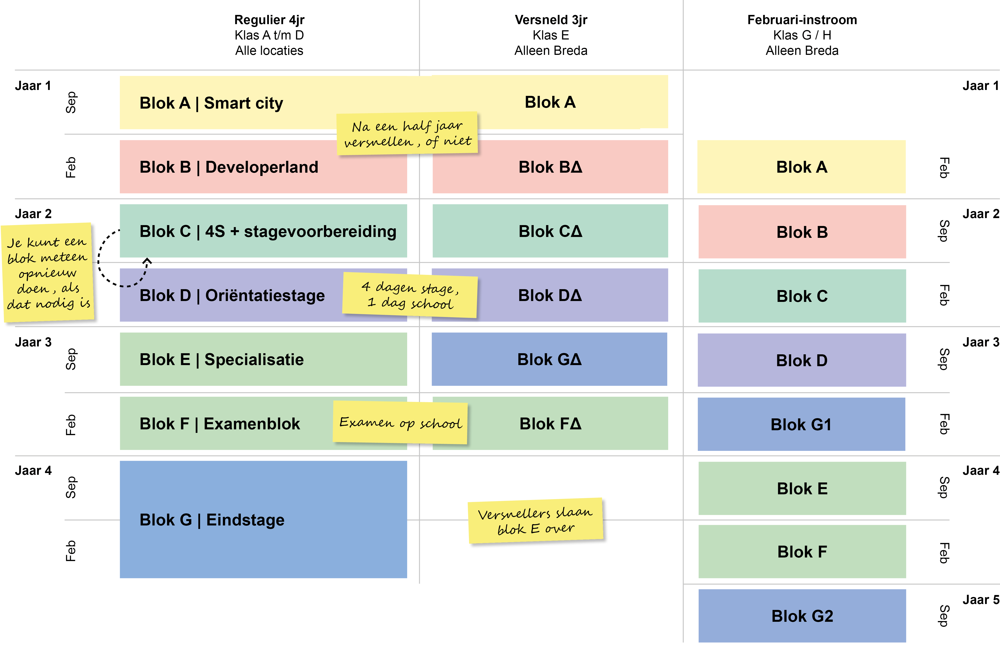

versnelling
er is ook een mogelijkheid op versnellen. dat dat houd in dat je de in drie jaar doen inplaats van 4 maar je moet dan wel meer zelfstanding en thuis doe
je kan de oplijding in 3 jaar doen
de blokken
op deze oplijding zijn de jaren opgedeeld in blokken. 1 blok is een half jaar en heeft een bepaald thema en als je het blok niet haal kan je die opnieuw doen inplaats van het hele jaar
zo zal de jaar indeling er uit zien